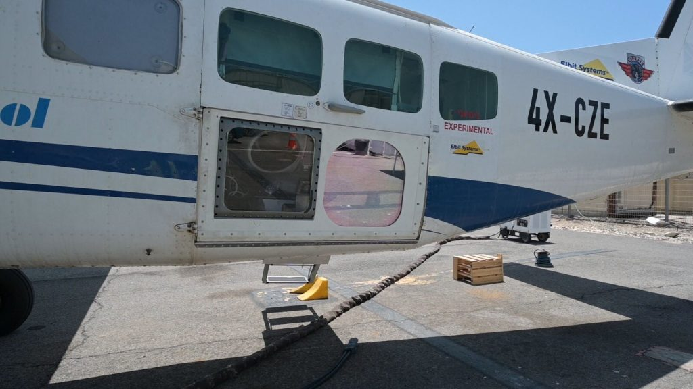
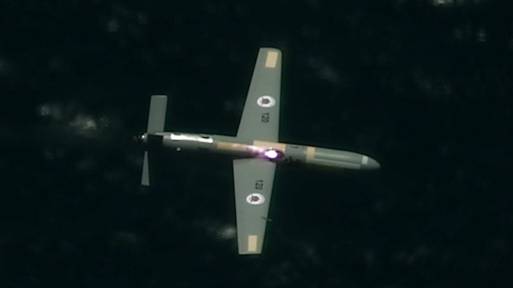
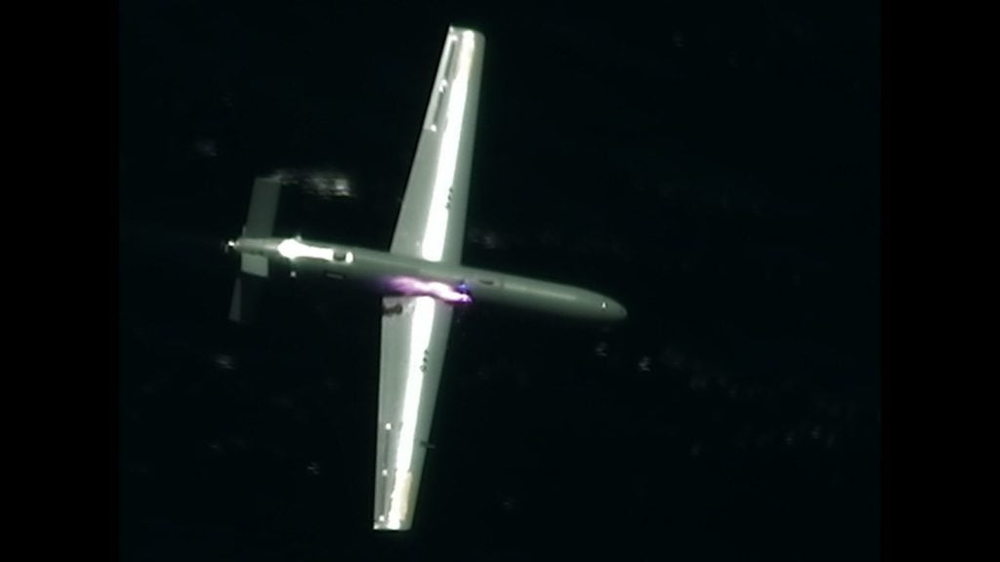
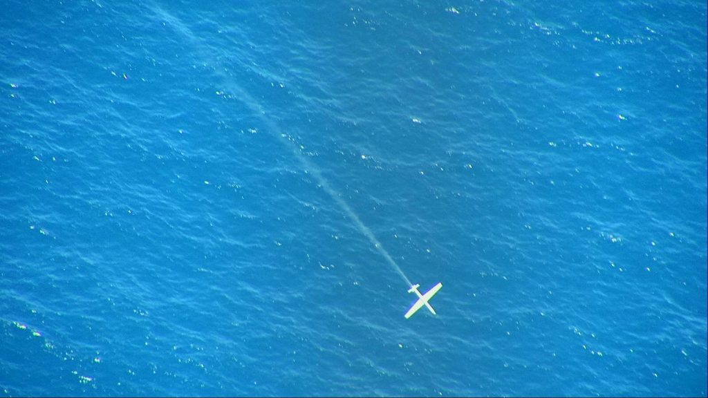

ဒါ့ဟာ ကမ္ဘာပေါ်မှာ ပထမဆုံး လေယဉ်ကနေ လေဆာ လက်နက်နဲ့ ပစ်ခတ်မှုပဲ ဖြစ်ပါတယ်။ ဒီစမ်းသပ်မှုမှာ လူမပါတဲ့ မောင်းသူမဲ့ လေယဉ်ကို အခြားလေယဉ်ပေါ်ကနေ လေဆာ လက်နက်နဲ့ ပစ်ခတ်ပြီး ပစ်ချခဲ့တာပဲ ဖြစ်ပါတယ်။
ဒီပစ်ခတ်မှုဟာ တချိန်လုံး လေကြောင်းကနေ ဒုံးကျည်နဲ့ မောင်းသူမဲ့ ဒရုန်းတွေနဲ့ တိုက်ခိုက်မှု ခံနေရတဲ့ အစ္စရေး နိုင်ငံအတွက် အလွန်ပဲ အရေးပါတဲ့ စမ်းသပ်မှု ဖြစ်ပါတယ်။
ဒီ စွမ်းအားမြင့် လေဆာ လက်နက်ကို အဆင့်မြင့် လေကြောင်းအာရုံခံ ကရိယာတွေနဲ့ ပစ်မှတ်ရှာဖွေရေး ကရိယာတွေ တပ်ဆင်ထားတဲ့ လေယဉ်ပေါ်မှာ တပ်ဆင်ပြီး စမ်းသပ်ခဲ့တာပဲ ဖြစ်ပါတယ်။ ဒီလက်နက်ဟာ လူမဲ့ ဒရုန်း အမြောက်အများကို တစ်ချိန်ထဲ တစ်ပြိုင်ထဲ စောင့်ကြည့်ထောက်လှမ်းပြီး ပစ်ခတ်ဖျက်စီးမှု ပြုလုပ်နိုင်ဖို့ ရည်ရွယ်ပြီး တည်ဆောက်ထားတာပါ။




အစ္စရေး တပ်မတော်ရဲ့ တွစ်တာ အကောင့်မှာ ဖော်ပြချက်အရ ဒါဟာ ကမ္ဘာပေါ်မှာ ပထမဆုံး ဖြစ်တယ်လို့ သိရပါတယ်။
ဆက်စပ်ဆောင်းပါး – အမေရိကန်တပ်မတော်၏ ပထမဆုံး စစ်မြေပြင်သုံး လေဆာလက်နက်
ဆက်လက်ဖော်ပြရာမှာ “ဒါဟာ နှစ်ပေါင်းများစွာ ဆက်လက် ကြိုးပမ်းရမယ့် စီမံကိန်းကြီးရဲ့ ပထမ အဆင့်သာ ဖြစ်ပါတယ်။ ဒီ အဆင့်မြင့် လေကြောင်းရန် ကာကွယ်ရေး စနစ် ပြီးစီးသွားလို့ရှိရင် အစ္စရေး နိုင်ငံရဲ့ အလွှာစုံ လေကြောင်းရန် ကာကွယ်ရေး စနစ်ကြီး တစ်ခုလုံအပေါ်မှာ နောက်ထပ် အလွှာတစ်ခု ထပ်တိုးလာတော့မှာ ဖြစ်ပါတယ်။ ဒီစနစ်ဟာ လက်ရှိ ရှိနေတဲ့ သံပေါင်းချောင် (Iron Dome)၊ ဒေးဗစ်လောက်လွှဲ (David’s Sling)၊ နဲ့ မြှား (Arrow) လေကြောင်းရန်ကာကွယ်ရေး စနစ်တွေကို ပိုမိုအားကောင်းလာ စေမှာ ဖြစ်ပါတယ်” လို့ ဖော်ပြထားပါတယ်။
ပြီးခဲ့တဲ့ နှစ်က ဖြစ်ခဲ့တဲ့ အစ္စရေးနဲ့ ဂါဇာဒေသက ပါလက်စတိုင်း တပ်ဖွဲ့ဝင်တွေကြားက တိုက်ခိုက်မှုတွေမှာ Iron Dome စနစ်ဟာ ဂါဇာဒေသက ပစ်ခတ်လိုက်တဲ့ ဒုံးကျည်နဲ့ လူမဲ့လေယဉ်တွေကို အောင်မြင်စွာ ပစ်ချပြီး အစ္စရေး လူထုကို အကာအကွယ် ပေးနိုင်ခဲ့ပါတယ်။ ဒါပေမယ့် ဒီ Iron Dome ဒုံးခွင်းဒုံး တွေဟာ ဈေးအလွန်ကြီးပြီး ဈေးသက်သာတဲ့ လူမဲ့ ဒရုန်းတွေကို ပစ်ချရတာဟာ ရေရှေမှာတော့ သိပ်တွက်ချမကိုက်လှဘူးလို့ ပညာရှင်တွေက ထောက်ပြကြပါတယ်။
ဒါ့ကြောင့်လဲ အစ္စရေး တပ်မတော်အနေနဲ့ ရေရှည်မှာ ဈေးသက်သာတဲ့ လေဆာလက်နက်လို လက်နက်မျိုးတွေကို ရှာဖွေနေတာပဲ ဖြစ်ပါတယ်။
Interception tests successfully completed employing airborne High-Power Laser Weapon System. The system successfully intercepted UAVs mid-air, at various ranges & altitudes, making Israel among the first countries to demonstrate this capability. @IAFsite Video: @Israel_MOD (1/2) pic.twitter.com/pfYDXfuIKLအခုစမ်းသပ်မှုနဲ့ ပါတ်သက်လို့ သတင်းထောက်တွေရဲ့ မေးမြန်းမှုကို အစ္စရေး တပ်မတော် သုတေသနနဲ့ ဖွံဖြိးရေး ဌာန အကြီးအကဲ ဗိုလ်မှူးချုပ် ယာနစ်ဗ် ရိုတမ် (Brig. Gen. Yaniv Rotem) က အခုလို မှတ်ချက် ပေးပါတယ်။
— Elbit Systems (@ElbitSystemsLtd) June 21, 2021
“ဒါဟာ အစ္စရေးတင်မက ကမ္ဘာမှာပါ ပထမဆုံး လေယဉ်တင် လေဆာလက်နက် အောင်မြင်စွာ ပစ်ခတ်စမ်းသပ်မှု ဖြစ်ပါတယ်။ ဒါဟာ ကြီးမားတဲ့ နည်းပညာ အောင်မြင်မှုကြီးပဲ ဖြစ်ပါတယ်။ ဒီလက်နက်ဟာ အလွန် စွမ်းအားပြင်းထန်ပြီး အရမ်းလဲ တိကျပါတယ်။ ပစ်မှတ်တွေကိုလဲ ဘယ်လို ရာသီဥတုမျိုးမှာမဆို တိတိကျကျ ပစ်ခတ်နိုင်ပါတယ်။”
ပြီးခဲ့တဲ့ အပါတ်က ပစ်ခတ်မှုမှာ လေဆာလက်နက်ဟာ တစ်ကီလိုမီတာ အကွာက ပစ်မှတ်တွေကို တိတ်ကျကျ ပစ်ခတ်နိုင်ခဲ့ပါတယ်။ ဒါပေမယ့် တကယ် ထုတ်လုပ်တဲ့ လက်နက်မှာတော့ အနည်းဆုံး ၁၀ ကီလိုမီတာကနေ ကီလိုမီတာ ရာချီ ဝေးတဲ့ နေရာက ပစ်မှတ်တွေကို တိတိကျကျ ပစ်ခတ်ဖျက်စီးနိုင်အောင် ပြုလုပ်သွားမှာ ပါတဲ့။ ဒါပေမယ့် ဒီလို စွမ်းဆောင်ရည်မျိုး ရရှိဖို့ကတော့ အချိန် နှစ်အတန်ကြာအုံးမယ်လို့ ပြောပါတယ်။
အစ္စရေး ကာကွယ်ရေး ဝန်ကြီးဌာနကတော့ ဒီလို ဖျက်စွမ်းအားမြင့် လေဆာ လက်နက်တွေကို အခြား လေယဉ်တွေမှာပါ ထိုးစစ်ရော ခံစစ်လက်နက် အနေနဲ့ပါ တပ်ဆင် အသုံးပြု သွားနိုင်ဖို့ ရည်ရွယ်ထားပါတယ်။ ဒီလို အဆင့်ရောက်ဖို့တော့ အချိန် နှစ်အတန်ကြာ လိမ့်အုံးမယ်လို့ ပညာရှင်တွေက သုံးသပ်ကြပါတယ်။